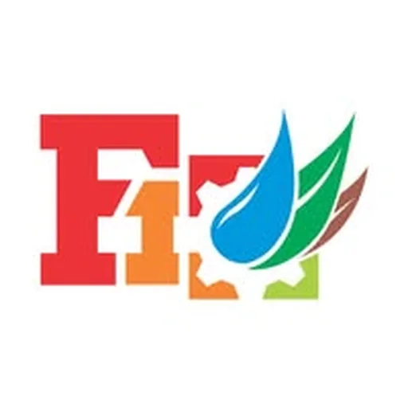

Western Visayas Food Innovation Center — Guimaras State University
Guimaras State University · Region VI
The Western Visayas Food Innovation Center at Guimaras State University (WVFIC-GSC) is a partnership between DOST Region VI and Guimaras State University (formerly Guimaras State College), established in 2016 at the GSU-Mosqueda Campus in Guimaras. It operates as the designated Food Innovation Center for Western Visayas — a one-stop-shop for the food processing industry in the region, addressing technology needs across the full value chain: process and product development, R&D, training and consultancy, laboratory and testing services, packaging assistance, and technology information.
- Category
- Food Innovation Center
- Host institution
- Guimaras State University
- City
- Jordan, Guimaras
- Region
- Region VI
- Operating status
- Operating
About the Center
The center is equipped with an array of major food processing technologies sourced from DOST-ITDI (Industrial Technology Development Institute) and DOST-MIRDC (Metals Industry Research and Development Center), enabling direct transfer of proven food processing technologies to MSMEs across the region. The WVFIC's vision is to be a leading hub for innovations and technical support services for the food industry in Western Visayas, with a mission to provide innovation technologies and relevant support services that contribute to inclusive and sustained development of the regional food sector.
Laboratory testing and chemical/microbiological analysis services are coordinated through the DOST VI Regional Standards and Testing Laboratory (RSTL), while packaging testing and toll services are available via the Philippine Center for Packaging Engineering and Technology (PC-PET) of Central Philippine University.
Programs & Services
- R&D activities for new product development, product variants, and process technology innovation in food processing
- Technology transfer — DOST-developed food processing technologies made accessible to MSMEs across Western Visayas
- Technical training and consultancy delivered by DOST-RDI experts, SUC faculty, and in-house specialists across food product development, process improvement, food safety, sensory evaluation, and packaging
- Laboratory and testing services — chemical and microbiological testing and nutritional analysis coordinated via DOST VI RSTL
- Packaging assistance — material design, label compliance, and access to packaging toll services via PC-PET/Central Philippine University
- Food processing equipment access: freeze dryer, spray dryer, vacuum fryer, water retort (hermetically sealed containers), vacuum sealer, jacketed kettle, cabinet dryer, continuous deep fryer, and planetary mixer
- Product and technology information database — repository of food technologies, market standards, regulatory requirements, and mandatory labeling references
- Contract research facility — open to researchers, professionals, and non-member entities on agreed terms
Contact
Sources & references
- gsu.edu.ph/reti/western-visayas-food-innovation-center-guimaras-state-college
- region6.dost.gov.ph/2016/05/25/food-innovation-center-poised-as-wvs-leading…
- philstar.com/the-freeman/region/2016/07/27/1607130/dost-6-opens-food-center…
Details are drawn from public records and the sources above, July 2026.
Startupreneur Innovation Hub · synced from the Notion catalog (July 2026) · status: published.